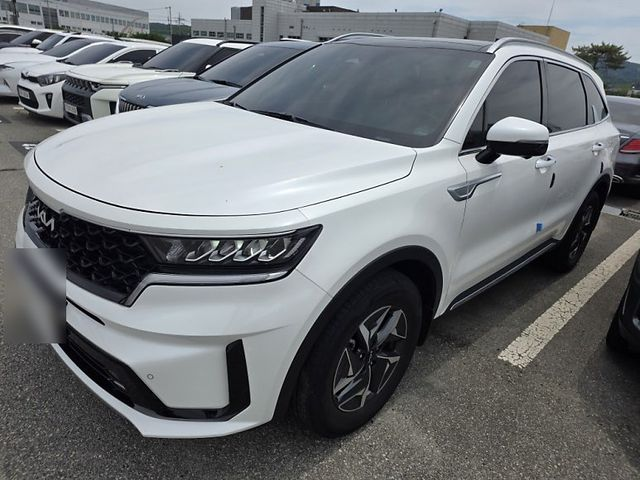
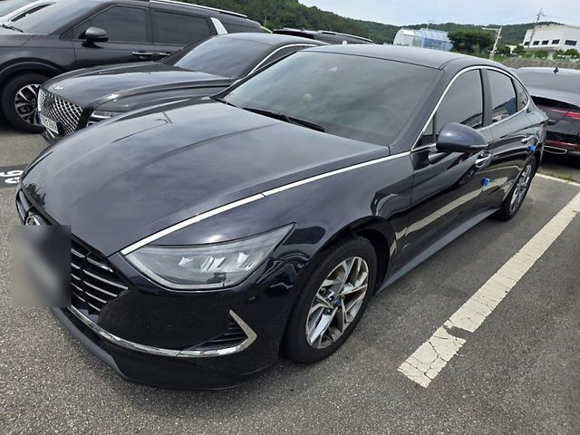
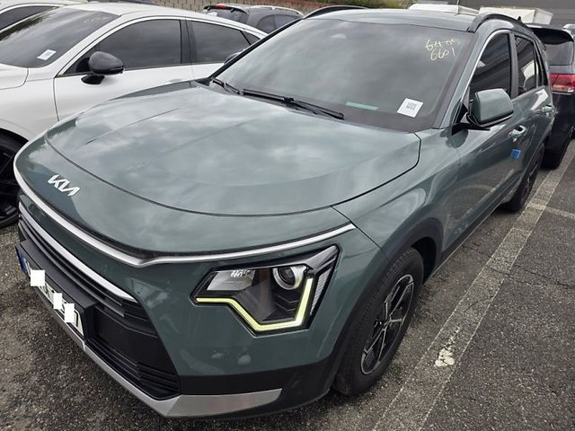
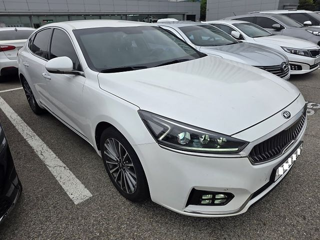
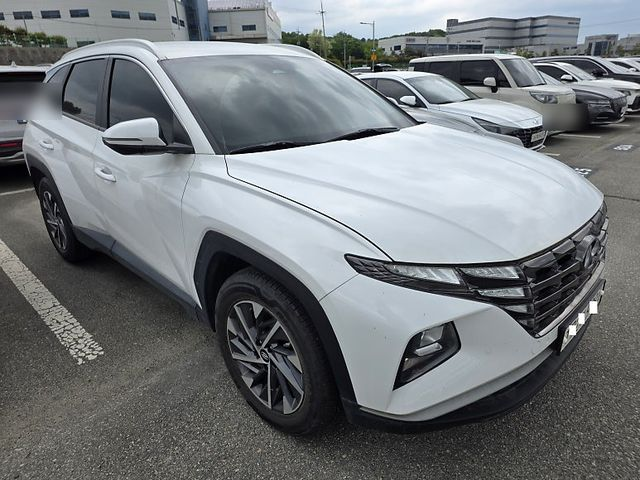

반석자동차경매 · 경기 화성대기업 자동차경매장에서 대표가 직접 보고 낙찰받아 드립니다
일반인은 들어갈 수 없는 경매장에서, 2014년부터 경매 대행만 해 온 대표가 시동을 걸어 점검하고 입찰합니다. 차를 먼저 받아 7~10일 타 본 뒤에 등록합니다.
문자 상담 010-3351-8208 · 낙찰 전까지 비용 없음
올 뉴 K7 디젤
2026.11.14 블로그 게시
490만 원
입찰 버튼을 한 번 누르면 5만 원씩 오릅니다
숫자가 오르는 모습은 경매 방식을 보여 주는 연출이고, 490만 원이 실제 낙찰가입니다. 이 사례 글 보기
차를 보지 않고 사는 불안을 줄이는 여섯 가지 약속
경매 대행은 고객이 차를 직접 보지 못한 채 진행되는 경우가 많습니다. 그래서 돈이 오가는 길과 책임지는 범위를 먼저 밝혀 둡니다.
먼저 타 보고, 그다음에 등록합니다
낙찰받은 차를 먼저 보내 드립니다. 7~10일 동안 평소처럼 타 보고 이상이 없을 때 등록을 요청하시면 됩니다.
고지와 다르면 환불합니다
엔진·미션에 중대한 결함이 있거나, 사고·침수 여부가 알려 드린 내용과 다르면 책임지고 환불해 드립니다.
차량 대금은 경매장 계좌로 직접
반석자동차경매는 차량 대금을 받지 않습니다. 고객 이름으로 경매장 계좌에 입금하므로 입금 기록이 그대로 남습니다.
낙찰 전에는 비용이 없습니다
출품 자료와 점검은 무료입니다. 계약금 100만 원은 입찰을 정한 뒤에 받고, 낙찰이 안 되면 전액 돌려 드립니다.
수수료 표를 먼저 공개합니다
상담을 시작할 때 수수료 표를 10원 단위까지 보내 드립니다. 처음 알려 드린 수수료 말고 다른 명목의 추가 비용은 없습니다.
대표가 처음부터 끝까지 합니다
상담, 점검, 입찰, 상품화 진행을 대표 한 사람이 맡습니다. 담당자가 바뀌지 않으니 책임질 사람도 분명합니다.
조건을 알려 주는 것부터 등록까지 여덟 단계
상담은 카카오톡과 전화로 진행하고, 차는 탁송으로 보내 드립니다. 지방에 계셔도 같은 순서로 진행합니다.
원하는 조건 알려 주기
차종, 연식, 주행거리, 색상, 옵션을 카카오톡으로 알려 주세요.
출품 자료 받기
조건에 맞는 출품 차량 자료를 경매 전날 밤이나 당일 아침 일찍 보내 드립니다.
점검 요청
마음에 드는 차가 있으면 점검을 요청하세요. 몇 번을 요청해도 점검비는 없습니다.
사진·설명 보고 결정
대표가 경매장에서 시동을 걸어 점검한 뒤 사진과 설명을 보내 드립니다. 그걸 보고 입찰할지 정합니다.
계약금 입금
입찰을 원할 때 계약금 100만 원을 받습니다. 낙찰받지 못하면 전액 바로 돌려 드립니다.
낙찰 후 대금·보험
낙찰되면 차량 대금을 고객 이름으로 경매장 계좌에 직접 입금하고, 자동차 보험에 가입합니다.
출고와 상품화
광택, 판금·도색, 내비게이션, 블랙박스, 썬팅 같은 작업을 원하면 출고 뒤에 진행합니다.
타 보고 등록
차를 먼저 받아 7~10일 타 본 뒤 이상이 없으면 이전 등록을 하고, 등록증은 등기로 보내 드립니다.
같은 그랜저, 경매장 낙찰가와 매매상 시세
매매상은 경매장에서 낙찰받은 차에 마진을 붙여 팝니다. 경매 대행은 그 낙찰가에 수수료를 더해 사는 방식입니다.
| 차종 | 경매장 평균 낙찰가 | 매매상 시세 | 예상 차이 |
|---|---|---|---|
| 더 뉴 그랜저 IG (2020~2022년식) | 약 1,900만~2,300만 원 | 약 2,200만~2,600만 원 | 약 150만~200만 원 |
| 디 올 뉴 그랜저 GN7 (2023~2025년식) | 약 2,500만~3,300만 원 | 약 3,000만~3,700만 원 | 약 200만~300만 원 |
최근에 낙찰받은 차
블로그에는 낙찰 사례 글이 1,282개 있습니다(2026.11.24 기준). 고객과 주고받은 상담 내용과 더 많은 사진은 각 글에서 볼 수 있습니다.
올 뉴 K7 디젤
낙찰가 490만 원. 예전 고객의 소개로 이어진 거래입니다.
블로그 글 보기
쏘렌토 하이브리드 2023년식
카카오톡으로 자료를 보내고, 입찰부터 상품화까지 통화로 진행했습니다.
블로그 글 보기
쏘나타 DN8 LPI
옵션이 좋은 가스차를 낙찰받은 사례입니다.
블로그 글 보기
디 올 뉴 니로 하이브리드
원하는 그린 색상이 나올 때까지 기다려 낙찰받았습니다. 재구매 고객입니다.
블로그 글 보기
올 뉴 K7 LPI
가스차를 찾는 고객의 낙찰 사례입니다.
블로그 글 보기
디 올 뉴 투싼 하이브리드
원하는 조건의 차가 출품될 때까지 기다려 낙찰받았습니다.
블로그 글 보기
대표 한 사람이 해마다 150대 넘게 낙찰받았습니다
딜러를 여러 명 두지 않고, 서류를 돕는 직원 한 명과 일합니다. 대표는 판매한 차의 70%가 재구매와 지인 소개라고 블로그에 밝히고 있습니다.
대표가 블로그에 공개한 2015~2025년 판매 대수입니다(단위: 대). 11년 합계는 1,970대입니다.
차를 받은 고객이 블로그에 남긴 글
“친절한 안내와, 고객의 입장에서 차량을 알아 봐 주고, 또 꼼꼼히 살펴주고, 마지막 탁송까지 친절하게 잘 해주셔서 너무 기분 좋게 차를 잘 전달 받았습니다.”
“처음에는 중고차에 대한 걱정이 있었는데, 받아보니 차량내부에 비닐도 안띤 거의 새차였습니다.”
“이번 계기로 아버지께서 생각하시던 경매차량에 대한 인식이 완전히 바뀌셨습니다.”
“여러번 귀찮게 해서 이 차량까지 4대를 반석님께 구매했네요.”
처음 경매로 차를 살 때 많이 묻는 질문
일반인도 자동차경매장에서 직접 입찰할 수 있나요?
아니요, 일반인은 직접 입찰할 수 없습니다. 경매장에 보증금과 연회비를 내고 계약한 매매상사만 입찰할 수 있어서, 반석자동차경매가 고객 대신 점검하고 입찰합니다.
점검만 요청해도 비용이 드나요?
아니요, 들지 않습니다. 낙찰 전까지는 비용이 없고, 점검을 여러 번 요청해도 점검비는 무료입니다.
계약금은 언제, 얼마를 내나요?
점검 내용과 사진을 보고 입찰을 원하실 때 계약금 100만 원을 받습니다. 낙찰받지 못하면 전액 바로 돌려 드립니다.
차량 대금은 어디로 입금하나요?
경매장 계좌에 고객 이름으로 직접 입금합니다. 반석자동차경매는 차량 대금을 받지 않습니다. 입금 기한은 낙찰 후 3일 이내입니다.
차가 마음에 안 들면 반품할 수 있나요?
엔진·미션에 중대한 결함이 있거나 사고·침수 여부가 알려 드린 내용과 다르면 환불해 드립니다. 타이어, 라이닝, 배터리, 오일류 같은 소모품이나 흠집을 이유로 한 반품은 되지 않습니다.
지방에 살아도 이용할 수 있나요?
네, 이용할 수 있습니다. 상담은 카카오톡과 전화로 진행하고 차는 탁송으로 보내 드립니다.
찾는 차의 조건만 알려 주세요
차종, 연식, 주행거리, 색상, 옵션을 보내 주시면 조건에 맞는 출품 차량 자료와 수수료 표를 보내 드립니다. 낙찰 전까지는 비용이 없습니다.